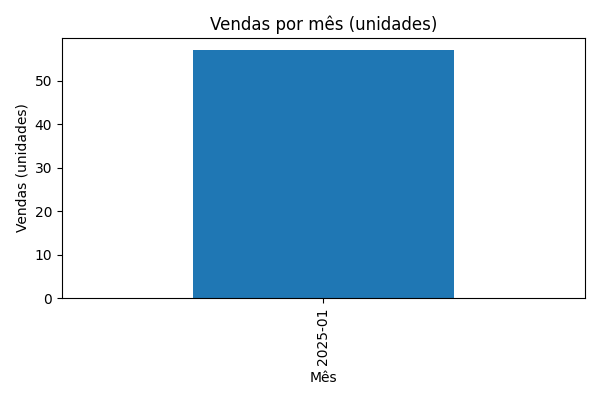
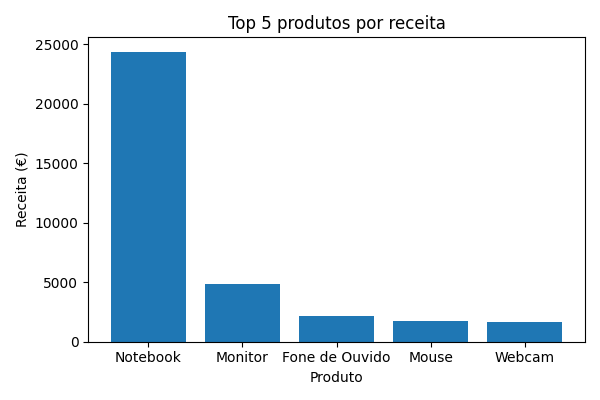

Relatório de Vendas
Gerado em: {agora}
Informações gerais do DataFrame
Colunas: {columns_text}
Dimensões (linhas, colunas): {shape_text}
Primeiras linhas
{head_text}
Info
{info_text}
Estatísticas descritivas
{describe_text}
Valores nulos por coluna
{nulls_text}
Vendas por mês (unidades)
{vendas_por_mes.to_frame(name="quantidade").to_html()}
Vendas por produto
{vendas_prod.to_html()}
Destaques
{texto_mais_vendido}
{texto_mais_receita}
Gráficos
Vendas por mês

Top 5 produtos por receita
